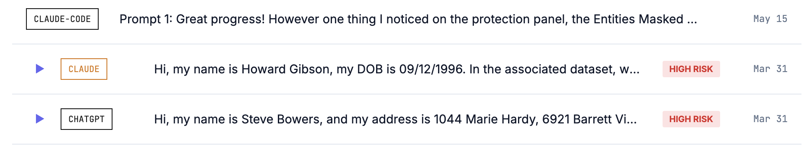

For security leaders
Book a briefing
The board wants AI yesterday. Your team is already pasting source code, contracts and customer records into ChatGPT, and today the proof is missing. PrivacyPal makes you the leader who says yes: on the device, Privacy Twins swap IP and PII before a prompt reaches the AI provider, with a per-prompt audit trail across ChatGPT, Claude, Copilot, Grok, Claude Code, Codex and Hermes Agent.
The same technology that protects 140+ companies.
A working session, not a pitch. Bring your hardest control requirement.

 Grok
Hermes Agent
Grok
Hermes Agent
The board wants AI. You're the one holding the pen.
Every meaningful AI tool asks for your data. Every serious control framework asks you to protect it. Today that tension lands on one desk: yours. The new answer is "yes, and here's the proof."
Staff already use AI on sensitive work through personal accounts and the browser. No policy, no logs, no answer to "what left the building?"
Block the tools and the work moves to a phone you don't manage. The exposure stays. Only your visibility goes.
Let every team keep their AI. Send the model twins, never the real data, and hand the auditor a per-prompt record on request.
Detection and substitution run on the device, before a prompt or file reaches an AI provider. The twins swap back to the real values in the answer on the same device.
Per-user, per-prompt logging of every interception and swap, in a SIEM-ready format. Shadow-AI discovery turns the unknown into a dashboard.
ChatGPT, Claude, Gemini, Copilot and Grok, plus Claude Code, Codex, Copilot agents, Hermes Agent and Private MCP. One policy across web chat, desktop apps and agentic workflows.
Blunt redaction blinds the model and staff route around it. Privacy Twins preserve context, so the output stays useful and adoption is voluntary.
The desktop app on Mac and Windows, the headless agent for Linux servers, SSO and org-wide policy, or PrivacyPal Cloud: a self-hosted gateway in your own VPC, with an air-gapped option.
Install once and the AI on every device is governed. Models, workflows and the board's timeline stay as they are.
Language-based protection for a language-based threat, with a control point on the endpoint, before anything reaches an AI provider.
The moment a name, account number, secret or source file appears in a prompt, file or agent call, PrivacyPal catches it on the device, in real time, before anything reaches an AI provider.
Sensitive values are swapped for statistically faithful synthetic twins before the request leaves the machine. Full context, real answers.
Twins swap back on return, and every hop is logged, per user, so you can greenlight AI and answer the auditor from the same dashboard.

Protection runs on the device, before a prompt or file reaches an AI provider. Sensitive values are swapped for Privacy Twins on the endpoint and swapped back to the real values in the answer on the same device, so the LLM only ever sees the twins: 0 bytes of sensitive data sent to AI providers.
Every prompt, interception and swap gets an audit record: the user, the AI tool, the time, the kinds of data protected and the risk level. The logs are SIEM-ready, admins review them user by user, and shadow-AI discovery shows which tools are in use across the org.
Yes. Beyond chat apps, the Max pack governs Claude Code, OpenAI Codex, Microsoft Copilot agents, Hermes Agent and Private MCP calls: the agentic surfaces where data moves without a human in the loop.
Yes. PrivacyPal Cloud is a self-hosted gateway that lives in your VPC (API-compatible with OpenAI, Anthropic and Google) for full data sovereignty, with an air-gapped deployment option and network DSPM scanning across your databases and data lakes.
Days, not quarters. Install once and the AI on the device is governed, with the same models and the same workflows. Most teams go from the first team to org-wide coverage in a matter of weeks.
Book a 20-minute briefing with our team. We'll govern a real prompt live, walk the audit trail, and map it to the controls you answer to.